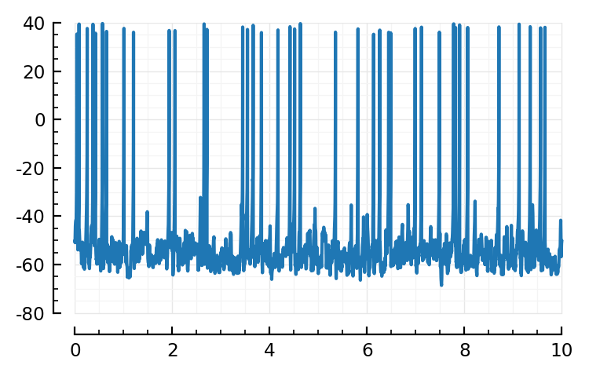

2022-10-24 • N-to-1 with lognormal inputs (for real now)
Contents
2022-10-24 • N-to-1 with lognormal inputs (for real now)¶
Imports¶
#
Revise.retry()
@time using MyToolbox
@time using Sciplotlib
@time using SpikeLab
@time using VoltoMapSim
0.001573 seconds (347 allocations: 21.695 KiB)
0.001348 seconds (347 allocations: 21.695 KiB)
0.001413 seconds (347 allocations: 21.695 KiB)
0.001501 seconds (347 allocations: 21.695 KiB)
Differential equations¶
izh = @eqs begin
dv/dt = (k*(v-vₗ)*(v-vₜ) - u - I_syn) / C
du/dt = a*(b*(v-vᵣ) - u)
I_syn = gₑ*(v-Eₑ) + gᵢ*(v-Eᵢ)
dgₑ/dt = -gₑ / τ # Represents sum over all exc synapses
dgᵢ/dt = -gᵢ / τ
end
SpikeLab.ParsedDiffeqs
with variables {v, u, I_syn, gₑ, gᵢ}
and parameters {C, Eᵢ, Eₑ, a, b, k, vᵣ, vₗ, vₜ, τ}
Parameters¶
params = @NT begin
# Cortical regular spiking (same as always)
C = 100 * pF
k = 0.7 * (nS/mV)
vₗ = - 60 * mV
vₜ = - 40 * mV
a = 0.03 / ms
b = - 2 * nS
# Not in model eqs above (yet)
vₛ = 35 * mV # spike
vᵣ = - 50 * mV # reset
Δu = 100 * pA
# Synapses
Eₑ = 0 * mV
Eᵢ = -80 * mV # Larger than Nto1 (was -65); same as nets.
τ = 7 * ms
# Inputs
Nₑ = 40
Nᵢ = 10
Δgₑ = 60nS / Nₑ
Δgᵢ = 60nS / Nᵢ
end
init = (
v = params.vᵣ,
u = 0 * pA,
gₑ = 0 * nS,
gᵢ = 0 * nS,
I_syn = 0 * nA,
)
Δt = 0.1ms
duration = 10second;
Spiking¶
Ugly verbose for now, not nicely parsed as the diffeqs above yet.
has_spiked(vars, params) = begin
@unpack v = vars
@unpack vₛ = params
return (v ≥ vₛ)
end;
on_self_spike!(vars, params) = begin
@unpack vᵣ, Δu = params
vars.v = vᵣ
vars.u += Δu
end;
Poisson inputs¶
fr_distr = SpikeLab.LogNormal(median = 4Hz, g = 2)
# 66% in [2Hz, 8Hz]
# 95% in [1Hz, 16Hz]
LogNormal{Float64}(μ=1.39, σ=0.693)
on_spike_arrival_exc!(vars, params) = begin
@unpack Δgₑ = params
vars.gₑ += Δgₑ
end
on_spike_arrival_inh!(vars, params) = begin
@unpack Δgᵢ = params
vars.gᵢ += Δgᵢ
end;
inputs = CVec(
exc = [PoissonInput(rand(fr_distr), duration, on_spike_arrival_exc!) for _ in 1:params.Nₑ],
inh = [PoissonInput(rand(fr_distr), duration, on_spike_arrival_inh!) for _ in 1:params.Nᵢ],
);
inputs[1]
SpikeLab.SpikingInput_ with SpikeLab.SpikeFeed [0/21] (next: 0.934) and on_spike_arrival_exc!
m = Model(izh, has_spiked, on_self_spike!, inputs);
sim!(m, init, params; duration, Δt)
MethodError: no method matching sim!(::SpikeLab.Model4, ::NamedTuple{(:v, :u, :gₑ, :gᵢ, :I_syn), NTuple{5, Float64}}, ::NamedTuple{(:C, :k, :vₗ, :vₜ, :a, :b, :vₛ, :vᵣ, :Δu, :Eₑ, :Eᵢ, :τ, :Nₑ, :Nᵢ, :Δgₑ, :Δgᵢ), Tuple{Float64, Float64, Float64, Float64, Float64, Float64, Float64, Float64, Float64, Float64, Float64, Float64, Int64, Int64, Float64, Float64}}; duration=10, Δt=0.0001)
Closest candidates are:
sim!(::SpikeLab.Model3, ::Any, ::Any; duration, Δt) at C:\Users\tfiers\phd\pkg\SpikeLab\src\model.jl:30
Stacktrace:
[1] top-level scope
@ In[34]:1
[2] eval
@ .\boot.jl:368 [inlined]
[3] include_string(mapexpr::typeof(REPL.softscope), mod::Module, code::String, filename::String)
@ Base .\loading.jl:1428
t = linspace(0, duration, Nt)
plotsig(t, v_rec / mV);

aggregate_spikes(inputs::AbstractVector{PoissonInput}) = begin
spikes = reduce(vcat, pi.sq.spikes for pi in inputs)
return sort!(spikes)
# mergesort might be faster than default of quicksort
# .. but then specifying that no sub-sort recursion needed...
# https://github.com/vvjn/MergeSorted.jl
# via https://stackoverflow.com/a/48772313/2611913
# "5x faster than sort!(), and 2x faster and less memory than sort!(alg=MergeSort)"
# even better, i do self :))
# > alloc array with len (sum(lengths))
# > fill one by one, each time lookin through each of the inputs (an index pointer for each -- ooh can use SpikeFeed :))
end
aggregate_spikes(inputs);
izh.generated_func
:((diff, vars, params)->begin
@unpack (v, u, I_syn, gₑ, gᵢ) = vars
@unpack (C, Eᵢ, Eₑ, a, b, k, vᵣ, vₗ, vₜ, τ) = params
diff.v = ((k * (v - vₗ) * (v - vₜ) - u) - I_syn) / C
diff.u = a * (b * (v - vᵣ) - u)
vars.I_syn = gₑ * (v - Eₑ) + gᵢ * (v - Eᵢ)
diff.gₑ = -gₑ / τ
diff.gᵢ = -gᵢ / τ
end)